Tollverdi er det grunnbeløpet som toll beregnes av når varer importeres til Norge. Tollverdien er en kritisk komponent i regnskapsføring av importkostnader og påvirker direkte bedriftens anskaffelseskostnader og lagerverdier. For bedrifter som driver med import er korrekt beregning av tollverdi avgjørende for nøyaktig kostnadskalkyle og overholdelse av tollregelverket.
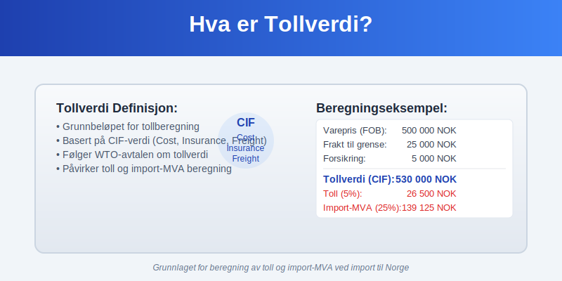
Seksjon 1: Tollverdi-begrepets Grunnlag
Tollverdien defineres i Norge gjennom EUs tollregelverk som implementert i norsk rett. Den representerer den økonomiske verdien av importerte varer som danner grunnlag for beregning av toll og import-MVA.
Grunnleggende Prinsipper for Tollverdi
Tollverdien skal reflektere:
- Faktisk betalt eller betalbar pris for varene
- Transaksjonsverdien ved armslengdes handel
- CIF-verdi (Cost, Insurance, Freight) til norsk grense
- Tilleggskostnader som påvirker varenes verdi
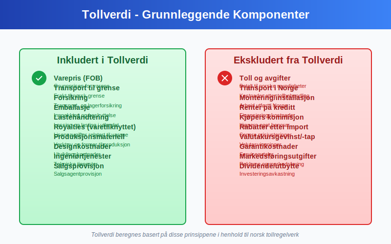
Internasjonale Rammer for Tollverdi
Tollverdiberegning følger WTO-avtalen om tollverdi som sikrer:
- Ensartet anvendelse på tvers av land
- Transparent vurdering av varehandel
- Rettferdig behandling av importører
- Forutsigbarhet i tollberegninger
Seksjon 2: Metoder for Tollverdiberegning
Tollregelverket opererer med seks forskjellige metoder for å fastsette tollverdi, rangert etter prioritet.
Metode 1: Transaksjonsverdien
Transaksjonsverdien er hovedregelen og brukes når:
- Det foreligger reell salgshandel
- Kjøper og selger er uavhengige parter
- Prisen er faktisk betalt eller betalbar
- Ingen uakseptable forhold påvirker prisen
| Inkluderte Elementer | Ekskluderte Elementer |
|---|---|
| Varepris (FOB) | Toll og avgifter |
| Frakt til grense | Behandling etter import |
| Forsikring | Gebyrer i Norge |
| Emballasje | Renter på kreditt |
| Royalties | Salgskommisjon |
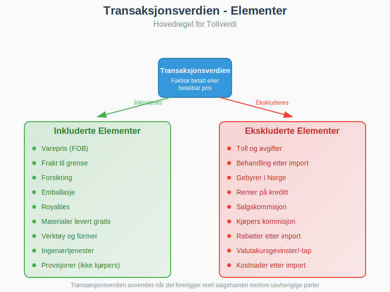
Metode 2: Identiske Varer
Når transaksjonsverdien ikke kan anvendes, brukes tollverdien for identiske varer importert under sammenlignbare forhold:
- Samme produsent og opprinnelsesland
- Samme tidspunkt for import (±60 dager)
- Sammenlignbart handelsnivå og kvantum
- Tilsvarende handelsvilkår
Metode 3: Lignende Varer
Hvis identiske varer ikke finnes, anvendes verdien av lignende varer:
- Samme funksjon og anvendelsesområde
- Lignende egenskaper og materialer
- Sammenlignbar kvalitet og omdømme
- Tilsvarende markedsposisjon
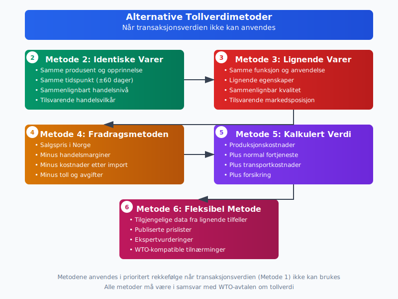
Metode 4: Fradragsmetoden
Basert på salgspris i Norge med fradrag for:
- Handelsmarginer og fortjeneste
- Kostnader etter import (transport, håndtering)
- Toll og avgifter betalt ved import
- Verdiøkning etter import
Metode 5: Kalkulert Verdi
Bygger på produksjonskostnader pluss:
- Materialekostnader og produksjonsutgifter
- Normale fortjeneste og salgsomkostninger
- Transportkostnader til norsk grense
- Forsikring og lastehåndtering
Metode 6: Fleksibel Metode
Anvendes når ingen andre metoder er praktisk mulige:
- Tilgjengelige data fra lignende tilfeller
- Publiserte prislister og markedspriser
- Ekspertvurderinger og bransjekunnskap
- WTO-kompatible tilnærminger
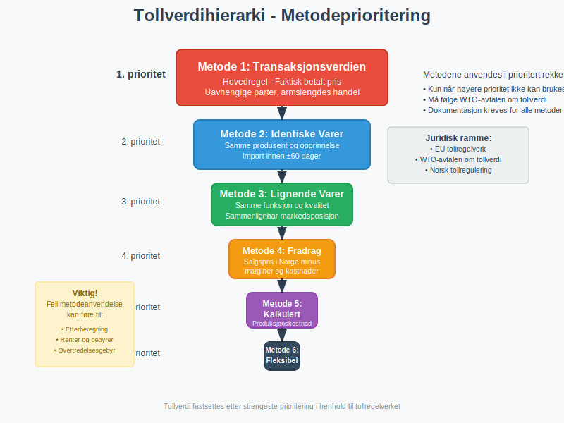
Seksjon 3: Praktisk Beregning av Tollverdi
Korrekt beregning av tollverdi krever systematisk gjennomgang av alle kostnadskomponenter og deres påvirkning på den endelige verdien.
CIF-verdiens Komponenter
CIF-verdien (Cost, Insurance, Freight) utgjør normalt tollverdigrunnlaget:
Eksempel: Import av maskiner fra Tyskland
Varepris (FOB Hamburg): 500 000 NOK
Transport til Oslo: 25 000 NOK
Forsikring: 5 000 NOK
Lastehåndtering: 3 000 NOK
---
Tollverdi (CIF): 533 000 NOK
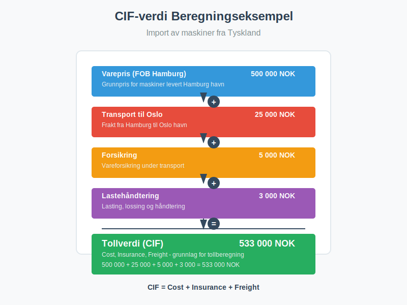
Tilleggselementer i Tollverdi
Visse kostnader skal inkluderes i tollverdien selv om de ikke er del av CIF-prisen:
- Royalties og lisensavgifter relatert til varene
- Verktøy og former levert gratis til produsent
- Materialer levert gratis til produksjon
- Ingeniørtjenester og designkostnader
- Provisjoner (unntatt kjøpers kommisjon)
Kostnader som Ekskluderes
Følgende skal ikke inkluderes i tollverdi:
- Renter på handelskreditt
- Kostnader etter import (transport, montering)
- Kjøpers kommisjon
- Rabatter gitt etter import
- Valutakursgevinster/-tap
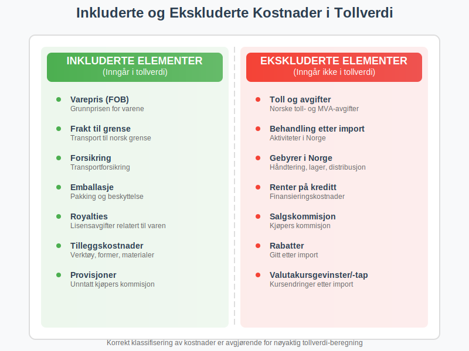
Valutaomregning og Kursfastsettelse
Tollverdi i utenlandsk valuta omregnes til norske kroner:
- Kursdato: Avgangsdato fra avsendelsesland
- Kurskilde: Norges Banks offisielle kurser
- Avrunding: Til nærmeste hele krone
- Dokumentasjon: Kursbevis ved store transaksjoner
Seksjon 4: Spesielle Tollverdisituasjoner
Enkelte handelsforhold krever særskilt oppmerksomhet ved fastsettelse av tollverdi.
Konserninternt Salg
Ved konserninternt salg må tollverdien justeres hvis prisen avviker fra markedspris:
- Armslengdes prinsipp skal anvendes
- Sammenligning med eksterne transaksjoner
- Kostpluss-metode som alternativ
- Dokumentasjon av prisfastsettelse
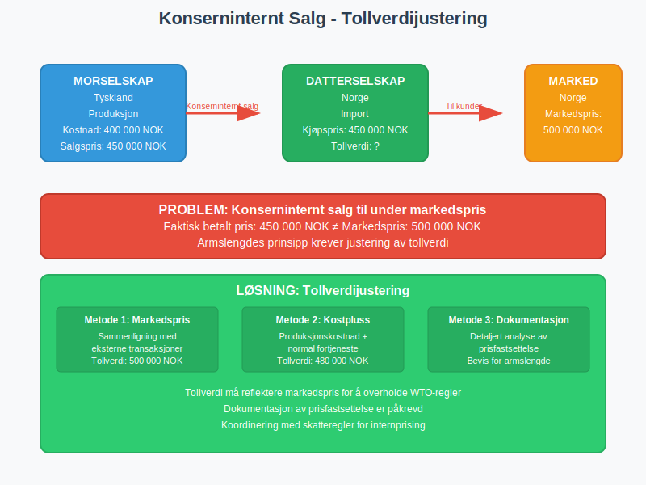
Leasingavtaler og Leie
For leasede varer beregnes tollverdi basert på:
- Total leasingsum over avtaleperioden
- Markedsverdi ved avtaleinngåelse
- Kjøpsopsjonens verdi hvis aktuell
- Restverdi ved avtaleendens
Returvarer og Reklamasjoner
Returvarer som reimporteres:
- Opprinnelig tollverdi som utgangspunkt
- Fradrag for verdiforringelse
- Tillegg for forbedringer
- Dokumentasjon av endringer

Deler og Tilbehør
Når varer importeres med tilbehør eller reservedeler:
- Samlet tollverdi når solgt sammen
- Separat verdsettelse ved forskjellig opprinelse
- Proporsjonale fordeling av felles kostnader
- Tekniske spesifikasjoner påvirker klassifikasjon
Seksjon 5: Dokumentasjon og Kontroll av Tollverdi
Korrekt dokumentasjon av tollverdi er essensielt for å overholde regelverket og forsvare verdifastsettelsen overfor Tollvesenet.
Nødvendig Dokumentasjon
Primære dokumenter for tollverdiberegning:
- Salgsfaktura med komplett prisspecifikasjon
- Kjøpekontrakt med vilkår og betingelser
- Fraktdokumenter med kostnadsspecifikasjon
- Forsikringsdokumenter og kostnadsberegning
- Kreditnotaer og justeringsdokumenter

Tilleggsdokumentasjon
Støttedokumenter for komplekse tilfeller:
- Royalty-avtaler og beregningsgrunnlag
- Verdikjede-analyser for konserninternt salg
- Markedsanalyser og prissammenligninger
- Tekniske spesifikasjoner og kvalitetssertifikater
- Valutakursberegninger og bevis
Elektronisk Dokumenthåndtering
Moderne tollbehandling setter krav til digital dokumentasjon:
- Strukturerte data i TVINN-systemet
- Elektroniske vedlegg til tolldeklarasjoner
- Digitale signaturer for validering
- Backup-systemer for dokumentbevaring
Seksjon 6: Regnskapsføring av Tollverdi og Importkostnader
Tollverdien danner grunnlag for regnskapsføring av importkostnader og må behandles korrekt i samsvar med god regnskapsskikk.
Aktivering av Tollverdi
Tollverdien skal normalt aktiveres som del av varekostnaden:
Bokføringseksempel - Maskinimport:
DEBET:
Maskiner (1650): 633 000 NOK
- Tollverdi: 533 000 NOK
- Toll (5%): 26 650 NOK
- Import-MVA (25%): 73 350 NOK
KREDIT:
Leverandørgjeld (2410): 533 000 NOK
Skyldig toll/MVA (2630): 100 000 NOK
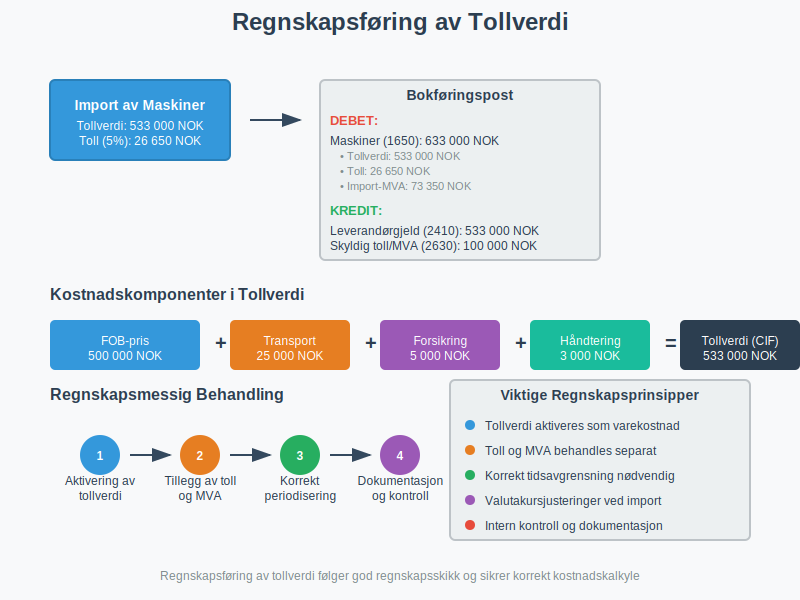
Periodisering og Tidsavgrensning
Ved månedsvis regnskapsavslutning må tollverdi periodiseres korrekt:
- Varer i transit: Aktiveres når risiko overføres
- Tollagervarer: Aktiveres ved uttrekk til forbruk
- Forskuddsbetalinger: Behandles som forskuddspost
- Valutakursendringer: Håndteres frem til risikotidspunkt
Revisjon og Kontroll
Internkontroll av tollverdiberegning bør omfatte:
- Systematisk gjennomgang av importdokumenter
- Stikkprøvekontroller av verdiberegninger
- Avstemming mot toll- og MVA-oppgjør
- Kompetanseutvikling for relevante medarbeidere
Seksjon 7: Tollvesenets Kontroll og Verifikasjon
Tollvesenet utfører systematisk kontroll av oppgitt tollverdi for å sikre korrekt avgiftsberegning.
Risikobasert Kontroll
Automatiserte systemer identifiserer risikofaktorer:
- Prisavvik fra historiske data
- Uvanlige handelsmønstre eller ruter
- Komplekse konsernstrukturer
- Høyrisiko-land og leverandører
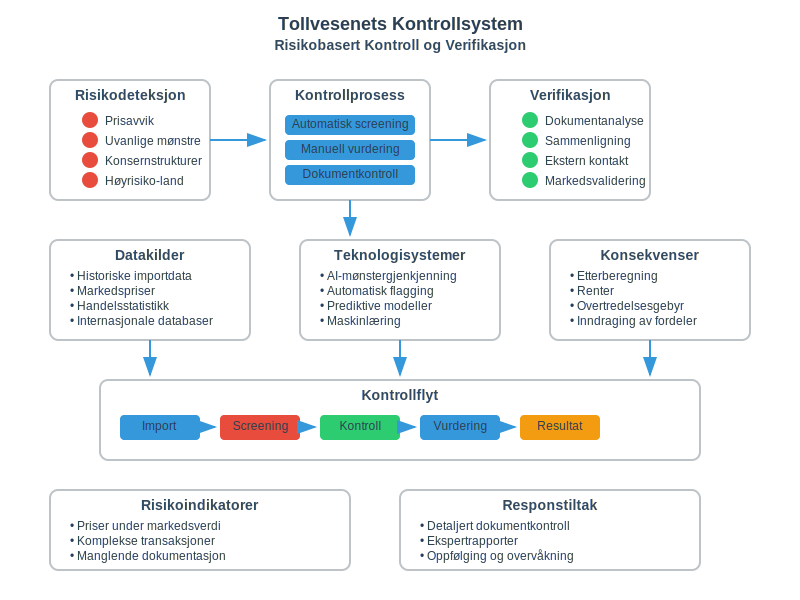
Verifikasjonsprosedyrer
Metodisk gjennomgang av tollverdi omfatter:
- Dokumentanalyse og krysskjekking
- Sammenligning med sammenlignbare import
- Kontakt med utenlandske myndigheter
- Eksternvalidering av markedspriser
Korreksjoner og Etterberegning
Ved feil i tollverdi kan konsekvensene være betydelige:
- Etterberegning av toll og MVA
- Renter fra forfallstidspunkt
- Overtredelsesgebyr basert på feilens omfang
- Inndraging av tollfordeler ved grove overtredelser
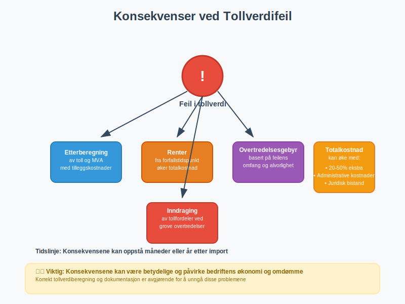
Seksjon 8: Avanserte Tollverdi-konsepter
For komplekse import-operasjoner kreves dypere forståelse av spesialiserte tollverdi-emner.
Transfer Pricing og Tollverdi
Konsernpriser må harmoniseres med tollverdi-krav:
- OECD-retningslinjer som tolkningsramme
- Armslengdes prinsipp i begge regelverk
- Dokumentasjonskrav for prisfastsettelse
- Samtidig koordinering av skatte- og tollposition
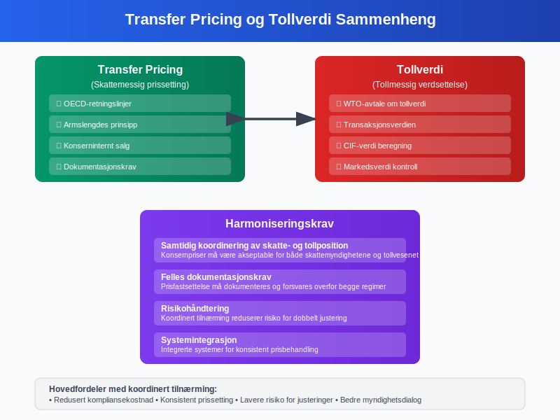
Intellektuelle Rettigheter
Royalties og lignende betalinger krever spesiell oppmerksomhet:
- Inkludering når relatert til importerte varer
- Ekskludering av betalinger for norske rettigheter
- Proporsjonale beregninger ved sammensatte avtaler
- Tidsmessig allokering av betalinger
Finansielle Instrumenter
Komplekse finansieringsordninger påvirker tollverdi:
- Leasingavtaler og operasjonell leie
- Factoring og forfaltning
- Konsignasjon og kommisjonssalg
- Bytteavtaler og naturalier
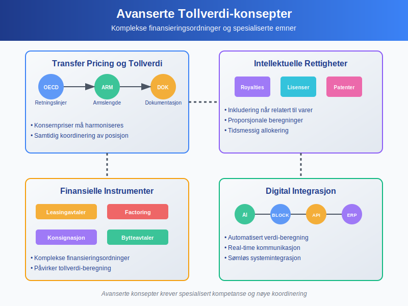
Seksjon 9: Digitalisering og Automatisering
Moderne tollbehandling anvender avansert teknologi for mer effektiv og nøyaktig tollverdiberegning.
Kunstig Intelligens i Tollverdi-kontroll
AI-systemer forbedrer kontrolleffektiviteten:
- Mønstergjenkjenning i handelsdata
- Automatisk flagging av avvikende priser
- Prediktive modeller for risikoverifyering
- Maskinlæring fra historiske kontroller

Blockchain og Smart Contracts
Distribuert teknologi kan revolusjonere tollverdi-dokumentasjon:
- Uforanderlig dokumenthistorikk
- Automatisk kontraktsgjennomføring
- Real-time verifikasjon av handelsdokumenter
- Redusert risiko for dokumentforfalskning
Integrerte Handelsplattformer
End-to-end digitalisering av handelsprocesser:
- Automatisk tollverdi-beregning
- Integrert dokumenthåndtering
- Real-time kommunikasjon med tollmyndigheter
- Sømløs kobling til regnskapssystemer
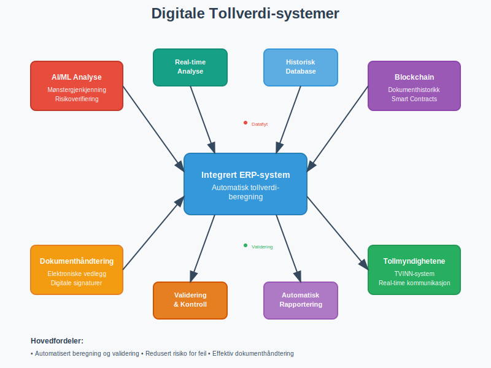
Seksjon 10: Internasjonale Perspektiver
Tollverdi-reglene påvirkes av internasjonale avtaler og harmoniseringsinitiativ.
WTO og Global Harmonisering
Verdenshandelsorganisasjonen driver fram:
- Enhetlige tollverdi-standarder
- Transparent regelverksutvikling
- Tvisteløsning mellom medlemsland
- Teknisk assistanse til utviklingsland
EU og EØS-harmonisering
Europeisk regulering sikrer:
- Identiske regler i EØS-området
- Felles tolkningsretningslinjer
- Koordinert håndhevelse
- Kontinuerlig regelverksutvikling
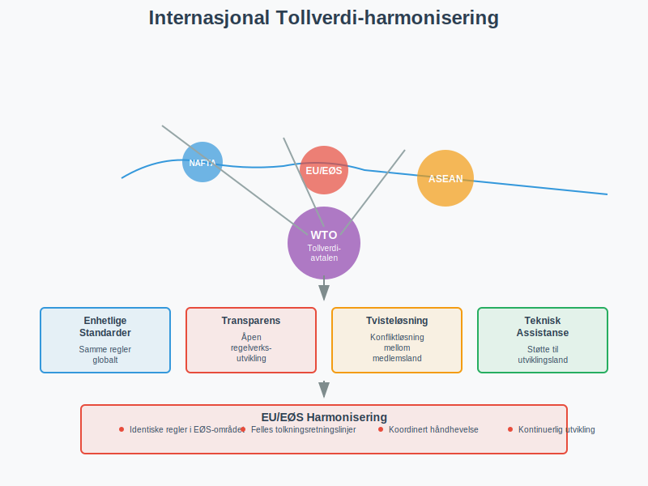
Fremvoksende Markeder
Nye handelspartnere skaper utfordringer:
- Forskjellige handelstradisjoner
- Manglende prisreferanser
- Komplekse valutaforhold
- Politisk risiko og ustabilitet
Seksjon 11: Beste Praksis og Anbefalinger
Effektiv håndtering av tollverdi krever systematisk tilnærming og kontinuerlig kompetanseutvikling.
Organisatoriske Tiltak
Intern struktur for tollverdi-håndtering:
- Sentralisert ansvar for tollverdi-vurderinger
- Klar rollefordeling mellom innkjøp og toll
- Systematisk opplæring av relevante medarbeidere
- Dokumenterte prosedyrer og rutiner
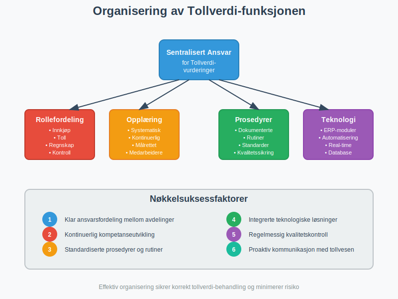
Teknologiske Løsninger
Systemstøtte for tollverdi-prosesser:
- Integrerte ERP-moduler for toll og MVA
- Automatisk dokumentgenerering
- Real-time kobling til tollsystemer
- Historisk database for sammenligninger
Kontinuerlig Forbedring
Kvalitetsutvikling gjennom:
- Regelmessig gjennomgang av prosedyrer
- Benchmarking mot beste praksis
- Proaktiv kommunikasjon med tollvesen
- Investering i kompetanse og teknologi
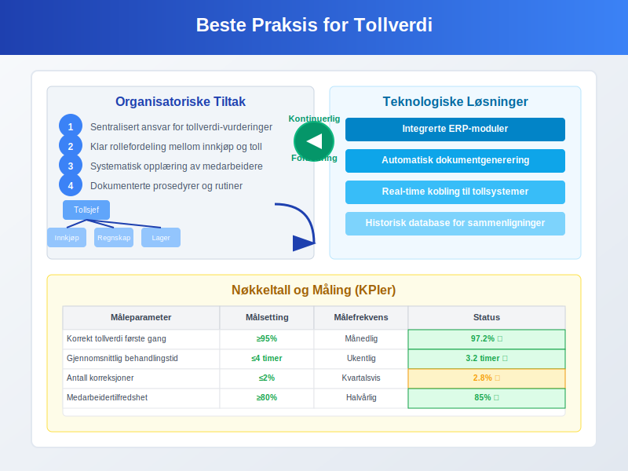
Nøkkeltall og Måling
KPIer for tollverdi-operasjoner:
| Måleparameter | Målsetting | Målefrekvens |
|---|---|---|
| Korrekt tollverdi første gang | >95% | Månedlig |
| Gjennomsnittlig behandlingstid | <4 timer | Ukentlig |
| Antall korreksjoner | <2% | Kvartalsvis |
| Kostnad per tolldeklarasjon | Benchmarking | Årlig |
| Medarbeidertilfredshet | >80% | Halvårlig |
Konklusjon
Tollverdi er et komplekst, men fundamentalt element i norsk tollregulering som krever grundig forståelse av både nasjonale og internasjonale regler. Korrekt fastsettelse av tollverdi er ikke bare en juridisk forpliktelse, men også en forretningsmessig nødvendighet for nøyaktig kostnadskalkyle og konkurransedyktig prissetting.
Den digitale transformasjonen av tollsektoren skaper nye muligheter for effektivisering og kvalitetsforbedring, men krever samtidig kontinuerlig kompetanseutvikling og systemtilpasning. Bedrifter som investerer i robuste tollverdi-prosesser og teknologiske løsninger vil være bedre posisjonert for å håndtere den økende kompleksiteten i internasjonal handel.
For å sikre korrekt håndtering av tollverdi bør bedrifter implementere systematiske rutiner for dokumenthåndtering, etablere klare ansvarslinjer og investere i både teknologiske løsninger og kompetanse. Dette vil bidra til å minimere risiko for feil, redusere administrative kostnader og sikre overholdelse av alle relevante regelverk.